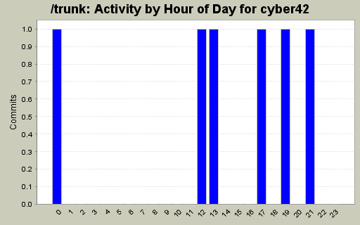
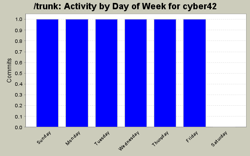
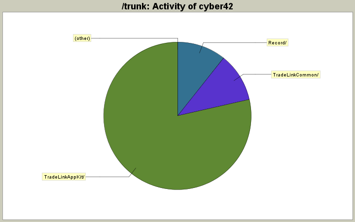

| Directory | Changes | Lines of Code | Lines per Change |
|---|---|---|---|
| Totals | 6 (100.0%) | 28 (100.0%) | 4.6 |
| TradeLinkAppKit/ | 2 (33.3%) | 22 (78.6%) | 11.0 |
| TradeLinkCommon/ | 2 (33.3%) | 3 (10.7%) | 1.5 |
| Record/ | 2 (33.3%) | 3 (10.7%) | 1.5 |

Issue 530: consecutive winners shows 100% when should show 0%
2 lines of code changed in 1 file:
Issue 514: Record.exe does not terminate
1 lines of code changed in 1 file:
Issue 505: record doesn't close .tik files when closed
2 lines of code changed in 1 file:
Issue 507: add consecutive winners/losers and probability
20 lines of code changed in 1 file:
Solved issue 502: gauntlet select dll problem
1 lines of code changed in 1 file:
Solved "collection modified exception".
2 lines of code changed in 1 file: